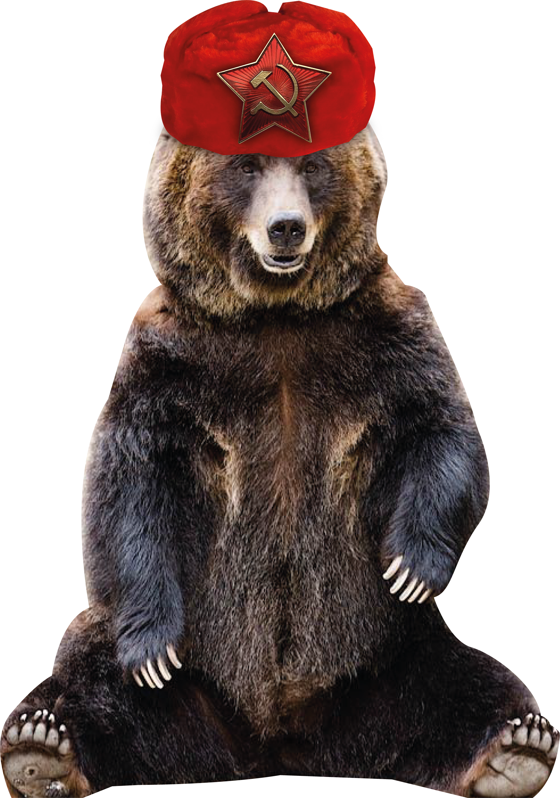
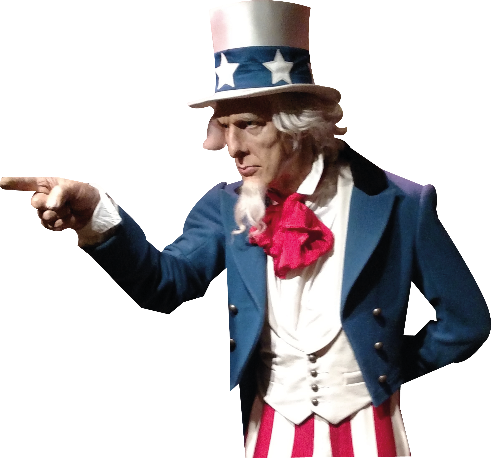
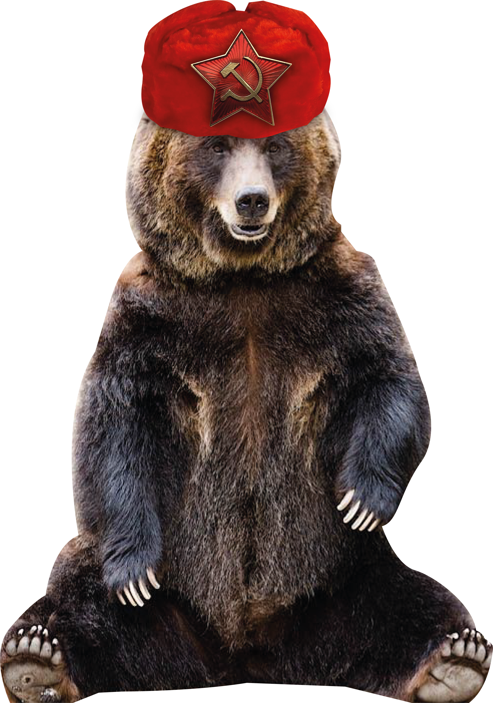
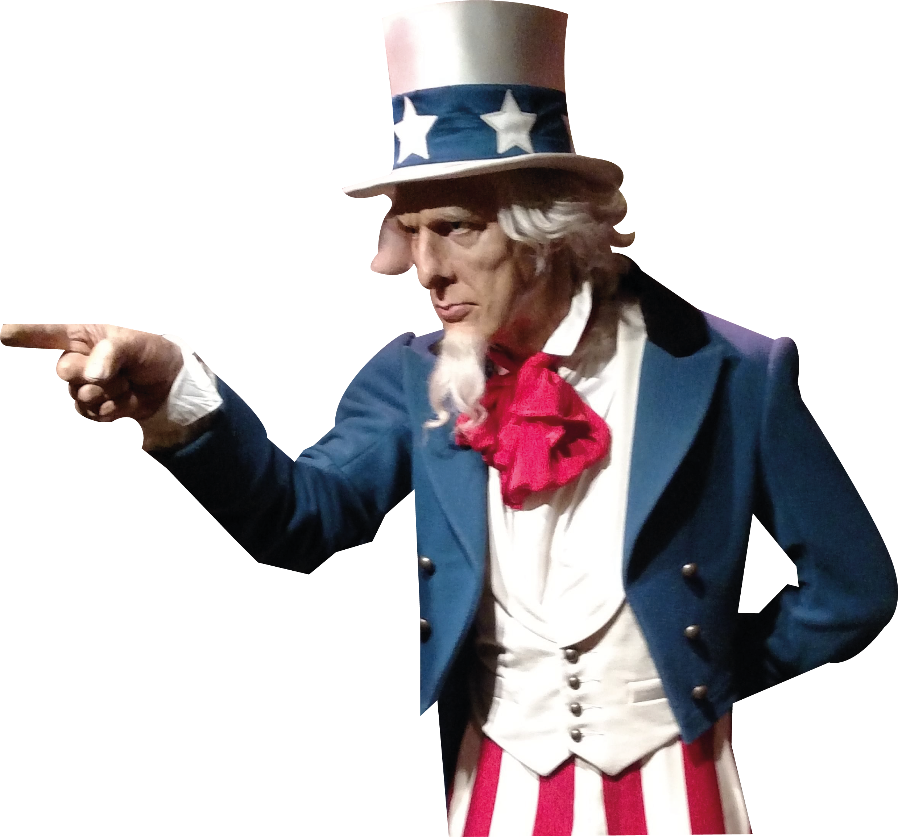

Early Signs
1945 – 1953

Ahhh, who knew that former allies would turn into bitter rivals? Well, that was bound to happen
anyway. When two superpowers have the world under their thumbs, when they are the two
remaining strongest lads when the curtains fall down, there are bound to be issues. And issues there
was. Two absolute savages, Joseph Stalin and Harry Truman, from the Soviet Union and the United
States respectively, started to show their teeth like dogs behind fences. They had the armies, the
technology, the firepower, the motivation and the economy to go at each other now. But they
weren’t going to clap each other’s faces like a Russian face slap tournament. They were about to
play a game, the one scoring the highest would be the one that had the most countries on its side.
Former colonial powers were out of the equation (France, Great Britain, Germany, Italy) and their
former empires were rising as they had weakened masters from then on. Guess what was about to
happen? They’d ask for independence! But before all that chit chat, a war was looming in the
horizon. See, after Japanese occupation, Korea was divided in two sides. And behind the borders of
the northern Korea, stood another empire that started to awaken: China. Meanwhile, the whole
area was also disputed by Americans who wanted to have their own dominion in the region as
they occupied Japan and had their goons in South Korea. What happened next? With China and
the USSR’s instigation, North Korea attacked. I mean… who wouldn’t? Your country is divided in two
and foreigners have the control of it, threatening not only your national unity but also China was
not
fond of having Americans at its doorstep, they needed to make a case or at least have a country
between them and the Americans. And the north managed to do serious damages as they pushed
all the way through the south, finally being stopped by American forces at the 17 th parallel (where
both countries are separated to this day).

Also Germany was divided in two. East Germany and West Germany, one side with the Western Block and the other with the Soviets. And both sides threw jabs at each other, like “haha I’m better than you”. But hey, to show how better they was, the soviets built a wall around East Germany, now everyone is trapped in a golden cage! Didn’t stop East German from fleeing tho. As the Soviets were holding all their satellite states under an iron grip, there were unhappy people in some states, more than others. One example, the Hungarian revolution. Didn’t end well.
As these events occurred, kilometres away, in Asia, India was asking for its independence but the Brits said no. So, they started doing nothing. That pissed off the brits so much they gave independence to India. So, you know, doing nothing can be very helpful. That is until the whole nation is divided in two between religious groups and History taught us that religious clashes are never peaceful.
The United Nations are also created and Israel is established as a nation in the Middle East. That topic is highly sensitive so I won’t last on the subject. But one major event was at play in China. It was a big country, with a big population, it would be catastrophic if a civil war erupted… and it did. The Communist forces clashed with the Nationalist factions, a revolution occurred and the nationalists were wiped out, eventually establishing in Taiwan and these sore losers went on to rampage through the natives because they lost in the mainland. Talk about passing your anger on weaker than thou. But hey, a new chapter is rising and that is the Death of Stalin…